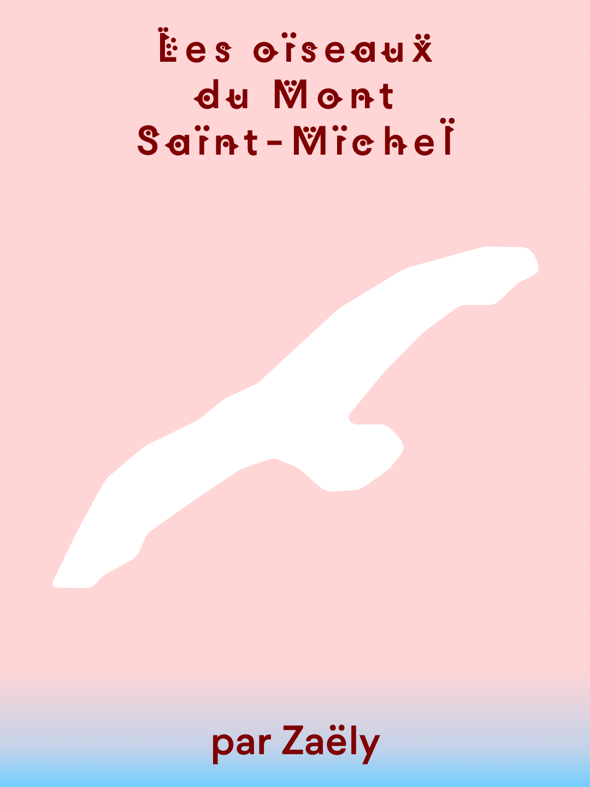
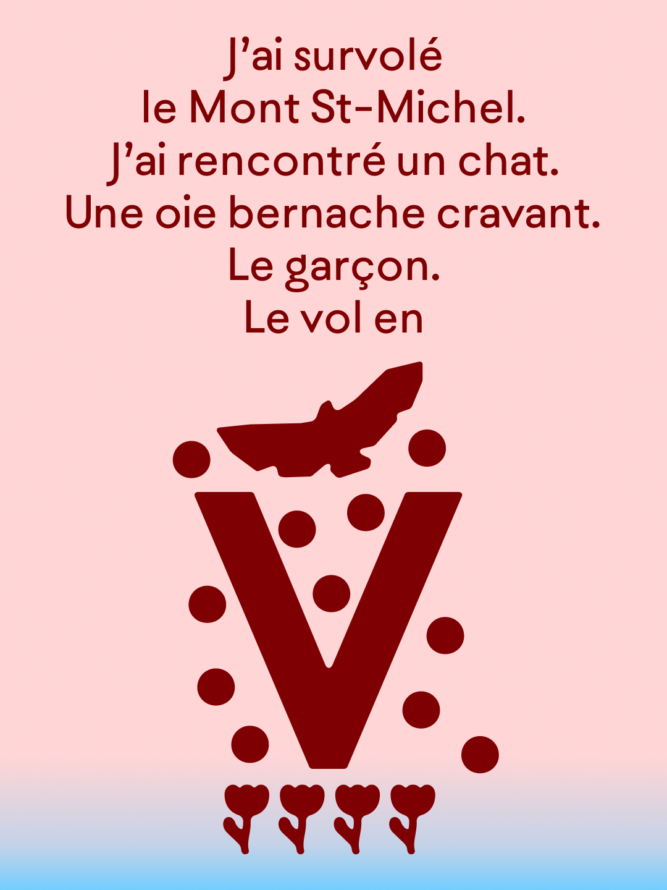
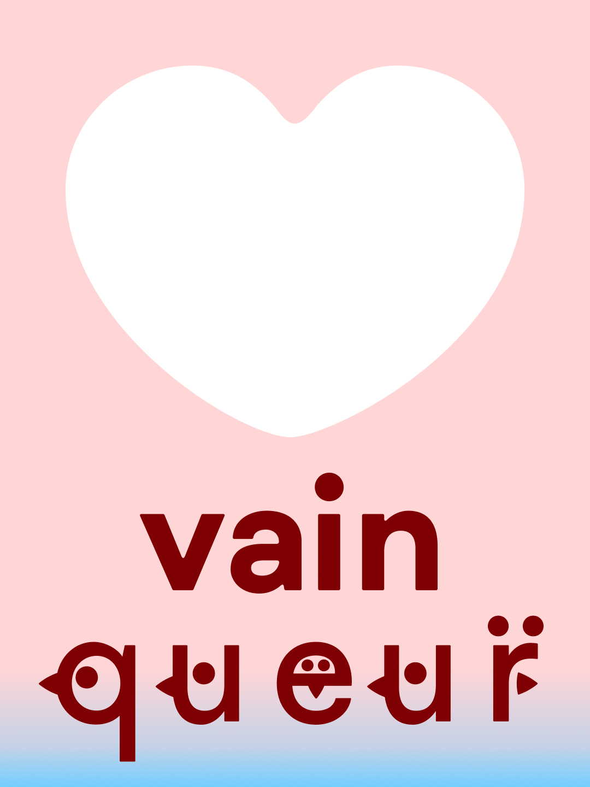
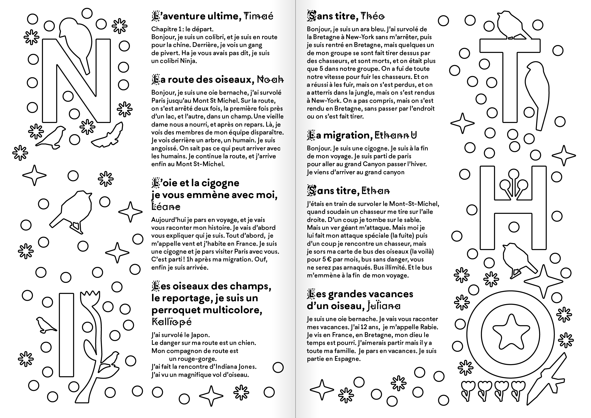
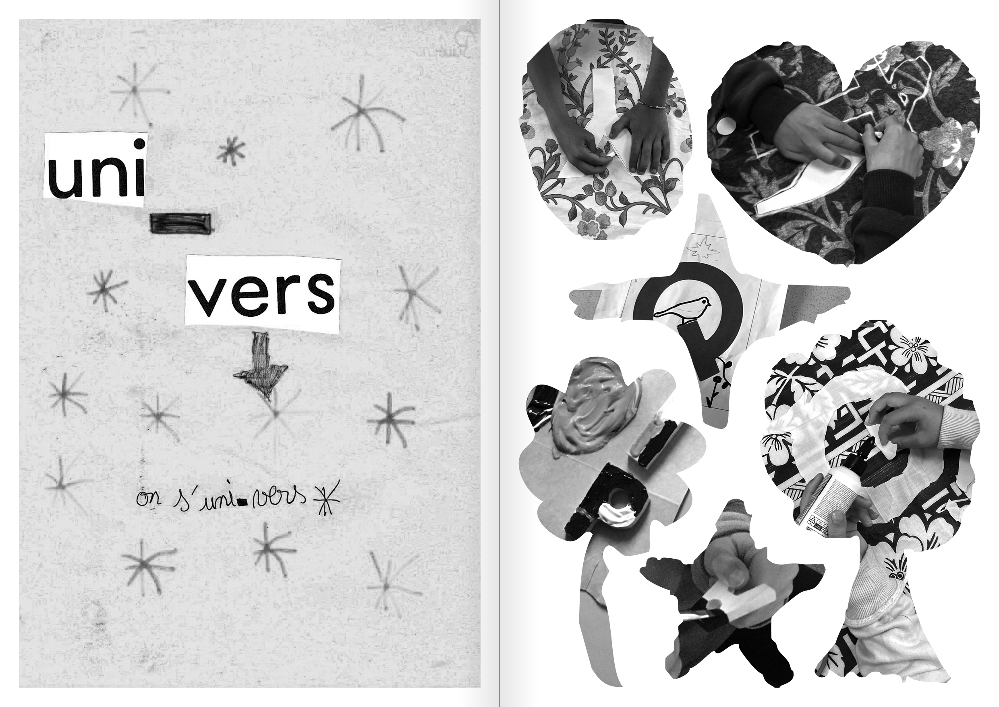
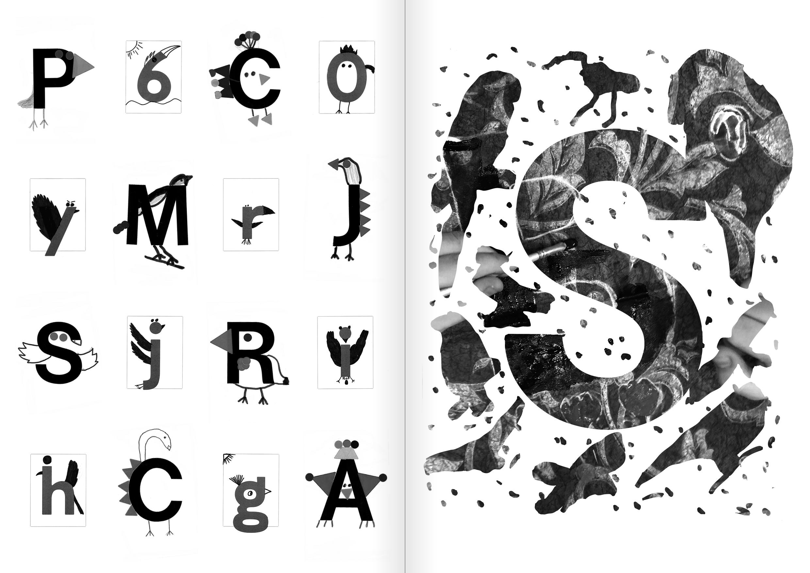
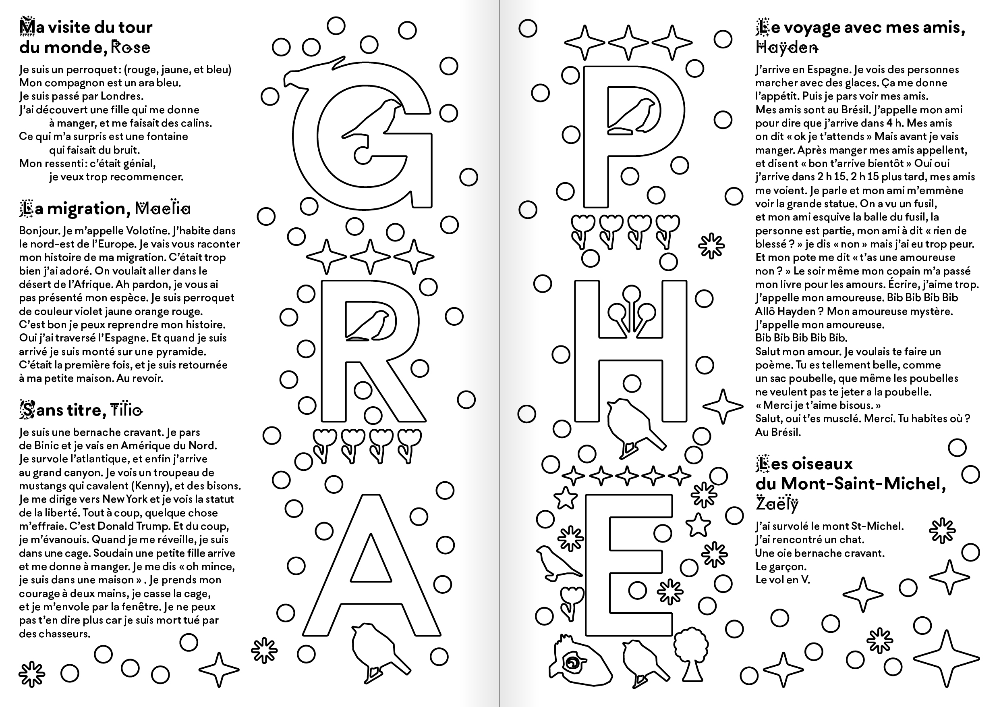
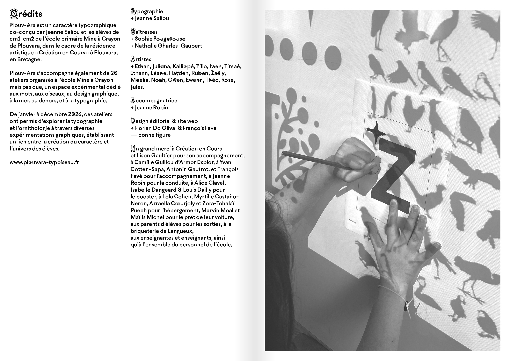

Plouv Ara
Livret et site spécimen pour la typographie Plouv-Ara de Jeanne Saliou. Ce caractère ayant été dessiné dans le cadre d'une résidence Création en cours, l'édition s'attache à mettre en avant l'articulation entre les production des enfants et la conception de celui-ci. Les lettrines sont utilisées à la manière d'un livre de coloriages, poursuivant ainsi la collaboration avec les enfants dans l'édition. Le site web présente l'ensemble du glyphset, et déploie les ornements de Plouv Ara.
Specimen booklet and website for the Plouv Ara typeface by Jeanne Saliou. Designed during a Création en cours residency, the publication focuses on highlighting the interplay between the children’s creations and the design of the typeface itself. The drop caps are used like a coloring book, continuing the collaboration with the children within the publication. The website showcases the entire glyph set and displays Plouv Ara’s ornaments.
2026
design d'un site web website design
livret booklet A5, 16 pages









